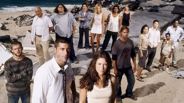

Galería


Lost (conocida en España como Perdidos y en algunos países de Hispanoamérica como Desaparecidos) es una serie de televisión estadounidense emitida originalmente por American Broadcasting Company (ABC) entre 2004 y 2010, hasta completar un total de seis temporadas.
La serie narra las vivencias de los pasajeros supervivientes del vuelo 815 de Oceanic Airlines Sidney-Los Ángeles en una isla aparentemente desierta, en la cual ocurren cosas muy extrañas. Con frecuencia hace referencia de manera específica a las historias de los protagonistas antes del accidente, con lo que explica las decisiones que estos toman en la isla, el motivo por el cual tomaron ese avión; y, para mostrar que ellos, sin saberlo, estaban perdidos en sus vidas.
